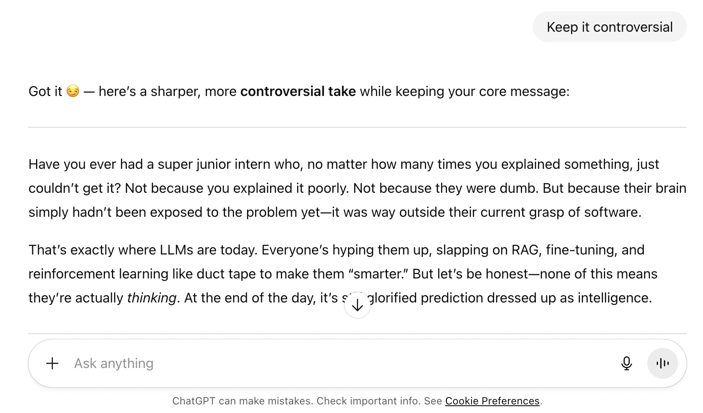

Aug 21, 2025
Welcome to the age of LLMs. Half the population thinks LLMs think just because someone decided to put a <Loader/> after every prompt that says “thinking...”.
I'm not going to lie, it does give the appearance of thinking.
Thinking - ideas or opinions about something.
AI Development = Speed + Thoughtful decisions? In my opinion, using AI in my development life cycle drastically improved at least one of the two, while often contradicting the other.
What I mean by this is, I often found myself being fast with it or being thoughtful with it, but not both. So the balance was missing.
Have you ever had a super junior intern working under you, and no matter how much you explained, they just don't understand?
It's not because you cannot explain it well enough, nor because they are dumb enough to not understand. It's just that their brain hasn't been exposed to the problem at hand yet, and the problem is way above their current understanding of software.
That's somewhat how I see LLMs today.
They can give you an answer that looks extremely confident and sophisticated, and you can sit there thinking, “Damn, this thing knows what it's doing.”
And then you run the code.
And everything explodes.
To make these systems more useful, people started throwing a bunch of things at them: RAG, fine-tuning, reinforcement learning, tool use, you name it.
RAG gives the model some external information to work with. Fine-tuning actually changes the model by training it further on additional data. Reinforcement learning uses feedback or reward signals to push the model towards certain behaviours.
So yes, at the very basic level, an LLM is predicting the next token. But saying “it's predicting, not thinking” doesn't really explain everything that's happening anymore.
Modern LLMs can break problems down, generate intermediate reasoning, call tools, retrieve information, write code, run code and then use the result to continue.
Whether you want to call that “thinking” or just really complicated prediction is probably a conversation for another day.
Personally, I care less about what we call it and more about one thing: Can I trust the answer?
The reason LLMs can also appear to have emotions or personality is interesting. They have been trained on an enormous amount of human generated text, so they have picked up patterns in how humans express things like humour, anger, excitement, uncertainty, sarcasm, confidence, etc.
So when I ask an LLM to be controversial and it responds with “Got it 😏”, it doesn't necessarily mean the machine is sitting there enjoying the controversy.
It's producing a response that fits the context.

When I asked ChatGPT to fix the above paragraph and asked it to keep it controversial, it started with "Got it 😏"!
Which is exactly why the more interesting question, at least to me, isn't whether LLMs "think." It's what happens to the economics of building software once something that produces confident, humanlike answers gets this cheap and this available.
With all that being said, how is the employment scenario looking? OpenAI launched its ₹399/month plan in India in August 2025 and honestly, that got me thinking.
Why is it so interesting?
Let's do some completely hypothetical calculations. They might be wrong, but I think they're useful just to get an idea of the scale we're talking about.
Quick disclaimer before we get into it: none of the numbers below are a real estimate of any specific model, GPU, or AI service. They're just a way to get a feel for the order of magnitude involved.
| Model | 4.0 × 1012 params (4T), hypothetical |
|---|---|
| Weights precision | INT8 (1 byte / weight) |
| KV cache precision | FP16, just for this example |
| Tokens (prompt / gen) | 4,000 in / 500 out → 4,500 total |
| Hardware | H100 SXM 80 GB, hypothetical |
| Compute assumption | 400 TFLOPS / GPU, hypothetical effective throughput |
| Power / GPU | 600 W, hypothetical |
| Sharding | Assume ideal linear sharding |
Weights:
4,000,000,000,000 weights × 1 byte = 4,000,000,000,000 bytes ≈ 4 TB
KV Cache:
This is where things get messy.
The KV cache depends heavily on the architecture of the model, the context length, the number of KV heads and the precision being used.
A simplified version looks like:
KV ≈ 2 × layers × KV_heads × head_dim × sequence_length × bytes
My original calculation assumed 80 layers, 128 heads and a 128-dimensional head. The problem is that there is no good reason to assume those exact numbers for an arbitrary 4T model.
So I'm not going to pretend that the KV cache is exactly 11.8 GB.
The important takeaway is simply that weights are not the whole memory requirement.
You also need memory for KV cache, activations, communication buffers, runtime overhead and, in a real system, multiple users at the same time.
Weight-only GPU requirement:
4,000 GB ÷ 80 GB ≈ 50 H100 GPUs
And again, that's just to hold the weights.
In reality you'd need more capacity depending on how the model is sharded and how many requests you're serving at the same time.
Compute:
For a rough dense-model estimate:
FLOPs ≈ 2 × parameters × tokens
2 × 4T × 4,500 ≈ 36 × 1015 FLOPs = 36 PFLOPs
Again, this assumes a dense model. If the model were a Mixture-of- Experts model, the number of parameters actually used for each token could be much smaller than the total parameter count.
Now, here's where the calculation becomes a little dangerous.
You might be tempted to say:
36,000 TFLOPs ÷ 20,000 TFLOPS ≈ 1.8 seconds
(that denominator is our 50 GPUs from above, each at 400 TFLOPS) and call that the latency.
But that's not really how LLM inference works.
The advertised FLOPS of a GPU are not the same as the actual end-to-end throughput you get while serving an LLM. Memory bandwidth, GPU utilization, communication between GPUs, batching and the model architecture all matter.
There are also two very different parts of inference: prefill, where the model processes the input, and decode, where it generates the response token by token.
So I'm going to treat the 1.8 seconds as an idealized arithmetic exercise rather than pretending it is the real latency of a request.
Energy:
If we still play along with the hypothetical, using the same 50 GPUs:
Energy = Power × Time
= (50 × 600 W) × 1.8 s
≈ 54,000 J ≈ 15 Wh
And this is where I want to put a big asterisk.
15 Wh is not “the energy required for one ChatGPT request”.
It is the result of our deliberately exaggerated hypothetical model and the assumptions we made above.
Now let's make another completely hypothetical assumption: 50% of them subscribe to an AI service and each user makes 100 requests a day.
Is that realistic? Probably not.
But let's see what the numbers look like anyway.
For context, India's per capita electricity consumption is around 1,460 kWh a year (2024-25 figures from the Ministry of Power). So that 22.5 GWh/day hypothetical works out to roughly 15,400 "Indian person years" of electricity, burned in a single day, just for this one made up scenario. That's obviously not how electricity accounting actually works, but it's a decent gut check for scale. India is also still building out capacity to raise everyday consumption toward the government's own targets, so it's fair to ask where AI-driven demand fits into that picture.
My instinct is that AI will create an artificial demand for energy and compute that pushes up the baseline of consumption.
In the short run, this could put pressure on electricity generation and grids, especially in places where data-centre demand grows faster than new power capacity.
But I also think the cost per task will keep falling.
Hardware gets better. Models get smaller. Quantization gets better. Batching gets better. Inference software gets better. People figure out smarter ways to do the same thing with less compute.
We've seen this happen with computing before.
Honestly, the exact numbers above don't matter that much. What matters is that running AI at scale is expensive today, and it's getting cheaper fast. It's that falling cost curve, not some fixed ceiling on what AI can do, that's actually reshaping the job.
And this brings me back to employment.
Imagine an engineer who used to spend four hours implementing a feature. With AI assistance, maybe the first version now takes thirty minutes.
Does that mean we need 87.5% fewer engineers?
Not necessarily.
The company could simply say:
“Great. Now build more.”
And that's the part I find interesting.
Productivity doesn't automatically mean unemployment. Sometimes it means you produce the same thing with fewer people. Sometimes it means you produce much more with the same people. And sometimes it does a bit of both.
I don't think anyone really knows yet how this will settle across the entire software industry.
But there are already some interesting signals.
The U.S. Bureau of Labor Statistics currently projects software developer employment to grow by 15.8% between 2024 and 2034, while traditional computer programmer employment is projected to decline by 6%.
That's a pretty interesting distinction.
Maybe the question isn't:
“Do we need people who can write code?”
Maybe the question is:
“Do we need people whose primary value is writing code?”
Those are two very different questions.
The engineer who spends most of their time writing boilerplate code might become less valuable.
But the engineer who understands the system, knows what actually needs to be built, can review AI-generated code, can debug the weird stuff and can take responsibility when something breaks?
I don't think that person is going away anytime soon.
In fact, they might become even more valuable.
Maybe AI isn't replacing engineers.
Maybe it's replacing the unit of work.
A software engineer used to be hired to produce code. Increasingly, they may be hired to produce outcomes.
That's a subtle but massive difference.
If AI makes implementation cheap, then judgement becomes more valuable.
If generating code costs almost nothing, the expensive part becomes knowing what to build, why to build it, whether it is correct, whether it is secure, whether it scales, whether users actually need it, and who is responsible when it breaks.
That's engineering.
So learn AI.
But don't stop there.
Learn systems. Learn databases. Learn networking. Learn security. Learn product. Learn how to debug something that doesn't have an obvious answer.
And most importantly, learn how to look at an AI-generated solution and say:
“This is wrong.”
And then:
“Here's why it's wrong.”
Because if AI is going to make writing code cheaper, then understanding code is probably going to become more important, not less.
NOTE: The calculations above are purely demonstrative. They are meant to give an idea of the scale involved in running LLMs and are not an estimate of the actual architecture, GPU count, latency, energy consumption or cost of any particular AI service. The employment outcome is also not predetermined. Some tasks will probably disappear, some will become easier, and some completely new work will be created. My main point is simply that engineers who adapt to this change are likely to be in a much better position than engineers who don't.
Art - From a different perspective